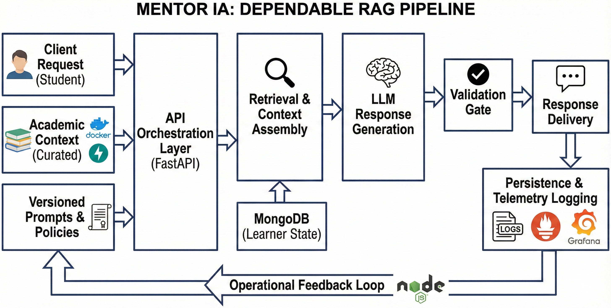

Mentor IA
Founder & Lead Engineer
An AI mentoring system focused on dependable system design, not one-off model demos.
The project is structured as a production-oriented case study: clear API boundaries, retrieval-backed responses, and operational feedback loops for continuous improvement.
Instead of a feature-first narrative, the implementation prioritizes architecture choices that support reliability, maintainability, and future scale.

Problem
Students often receive inconsistent guidance across fragmented channels, which makes it hard to maintain momentum and confidence during demanding coursework.
- Support quality varies significantly between sessions and mentors.
- There is limited continuity between previous context and next recommendations.
- Teams need a system that is explainable and operationally manageable.
Solution
Mentor IA delivers contextual guidance through a backend that combines retrieval, orchestration, and response policies. The core design separates interaction logic from model logic so each layer can evolve independently.
The result is a system-focused implementation where user state, knowledge retrieval, and response generation are coordinated through explicit service boundaries and versioned prompts.
System Architecture

Data flow: client request → API orchestration layer → retrieval/context assembly → LLM response generation → persistence and telemetry logging.
Engineering Decisions
- FastAPI for explicit contracts, modular routing, and predictable service behavior.
- MongoDB for flexible learner-state documents and iteration-friendly schema updates.
- Retrieval-augmented generation to ground answers in curated academic context.
- Prompt and policy versioning to make behavior changes auditable and reversible.
- Container-first deployment strategy to keep environments consistent from dev to staging.
Validation & Iteration Strategy
Validation currently relies on structured qualitative review and controlled test scenarios rather than production KPI reporting. Each iteration focuses on response usefulness, retrieval relevance, and failure-mode handling.
As the system matures, evaluation will track response quality trends, retrieval precision, user progression signals, and operational stability indicators through a repeatable review cadence.
- Scenario-based QA for mentoring consistency and edge-case behavior.
- Prompt comparison workflow before promotion to shared environments.
- Design constraints documented per release to guide safe scope expansion.
My Role
- Defined the architecture boundaries and tradeoffs between speed, quality, and maintainability.
- Implemented backend services, retrieval orchestration, and persistence workflows.
- Led user discovery interviews and translated findings into roadmap priorities.
- Set up iteration loops for prompt updates, system behavior checks, and release planning.